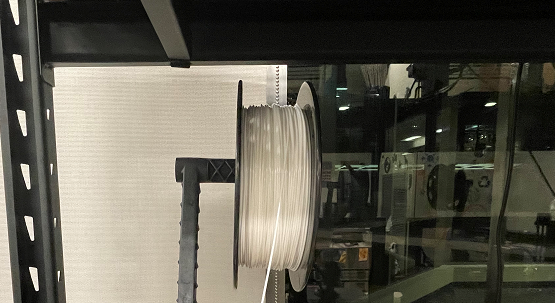

Week III - FDM Printing
This week we'll be FDM printing by using the PrusaSlicer and Fusion 360.
We will use these tools to print 3D print a pot for storing items.
The pot will fit on the item organizer from last week's CNC routing project.
Before proceeding, I highly recommend Kevin Elkhoury's Fusion 360 tutorial to understand the software better.
He details the software, such as how we can upscale or downscale our objects proportionally using parametric design.
These concepts are essential for designing and transferring our model to the PrusaSlicer software for printing.
As before, open Fusion 360 and create a sketch on the x,y plane.
I started with a circle sketch of 3 inches to match the diameter of my organizer's cupholder section.
I also created an offset of 0.25in to match the cuts made on the organizer.
Then, I extruded the offset area and joined it with the rest of the sketch.
I did the same with the center circle, as well as the newly-extruded base.
The result is a base for the pot upon which I can build off.
With the base complete, I created two offset planes above my pot.
I should note that Kevin Elkhoury's tutorial video helped me understand the concept of offset planes more clearly.
As he explains in the video, we can use 2D sketches on different planes to create 3D designs.
I used the offset to add two new circle sketches at different heights, allowing for varying depth throughout the pot.
I used the loft feature to join the three planes together, which created a solid body in the shape of my pot.
For some variety, I added a ridge on the outside of the pot.
I did so by creating a rectangular sketch on the z-plane and merging it with the main body.

Then, I duplicated the ridge around the diameter of the pot.
I created a circular pattern out of the original ridge and set its quantity to 10.
After that, I used the shell feature to hollow out the inside of the pot.
Finally, I exported the project as an .STL file to load into the PrusaSlicer software.
Now that the file is ready for printing, I will explain how FDM printing works.
Much like Fusion the 360 sketches, FDM printing works by extruding individual layers of an object.
It allows users to load computer-aided designs (CAD files) and print them using multiple layers.
To start, the printer must first calibrate the printing surface so that the device maintains proper proportions while printing.

Then, the printer extrudes filament through a heated nozzle, layer by layer.
This process continues up from the base, filling each layer with filament where needed.
The heated filament fuses as each layer prints, allowing a single object to form out of many layers.
FDM printers can also add supports to hold up sections of filament that would otherwise not be able to print layer by layer.
This process results in all of the layers fusing to form one solid object.
Understanding FDM printing allows us to utilize the PrusaSlicer and its software better.
To use the PrusaSlicer, first load your CAD model into the PrusaSlicer software.
Change the proportions and positioning of your object as needed, then determine what printing speed to use.
(It's important to note that higher speeds can significantly reduce the amount of time needed to print but may reduce the quality of each layer printed)
Set any other specifications necessary (i.e., infill or printing material) and click "Slice now."
The software will display each type of print used throughout the model, layer by layer.
Click "Export G-code" to transfer the file to an SD card and prepare it for the PrusaSlicer device.
With all necessary preparations complete, it's time to start printing.
First, load the file into the printer's SD card slot.
Then, utilize this knob to scroll through the printer's settings.
Also, make sure that the printing sheet is magnetically attached to the printer's surface.

Unload the current filament and load the desired one into the nozzle if you use a specific filament.
Allow this filament to preheat, and make sure to avoid touching the nozzle!
If you haven't already, make sure to clean the printing surface and calibrate the machine at this point.
Then, find the "Print from SD" option and select your file.
The filament should start to print your design layer by layer.
Make any adjustments in the settings, such as live-adjusting the Z plane.
If anything seems to go wrong, make sure to click the 'X' button on the printer.
Otherwise, stick around at least half an hour to make sure the printing does not go wrong.
I let my design print overnight, and I came back to my final product.
Here it is attached to the item organizer from last week.
When I designed the pot, I didn't realize I could make it fit inside the 0.25-inch circle cut.
However, it still fits the organizer, and I am pretty happy with how it came out!